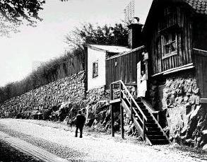
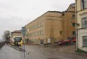
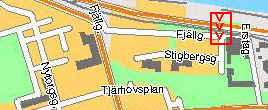
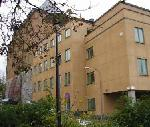

{kind=link}
|
Efter några mer tillfälliga ägare blev friherren, juristen
och skriftställaren Johan August Posse ägare av Lilla
Ersta. Han var en starkt konservativ herre som utgav
tidskriften "Väktaren, tidning för stat och kyrka" och
1856 gifte sig med författarinnan Betty Ehrenborg.
Hon var engagerad i väckelserörelsen, skrev och utgav
"Kristliga sånger" och översatte psalmer, bland hennes
mest kända översättningar kan nämnas "Klippa, du
som brast för mig" och "Här en källa rinner".
Barnhemmet inrymdes i de två nedre våningarna medan översta våningen fick bli bostad för Frans Vilhelm Sondén (som skötte diakonissanstaltens bokföring) och hans familj. Carl F. V. Sondén, son i huset, minns särskilt den väldiga telefongalge som fanns på Lilla Erstas tak - "det var mystiskt då föräldrarna var borta om kvällarna och barnjungfrun läste högt för oss tre syskon ur Topelius' barnberättelser - det sjöng nämligen samtidigt i trådarna".
  Erstagatan från Fjällgatan. Erstagatan 4 (Kv Rabatten). Alla dessa trähus revs senare, när Ersta nya sjukhus byggdes. Bilden är tagen 1898. |
     Fjällgatan 48-50, Erstagatan 2, före år 1907. Av de två trähusen i bakgrunden är det vänstra nr 50, det högra nr 48. All denna trähusbebyggelse revs senare, när Ersta nya sjukhus byggdes. |